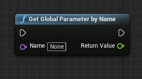
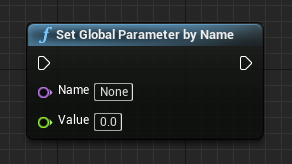
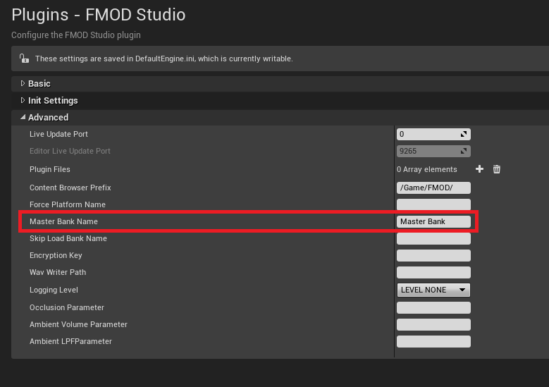

Unreal Integration 2.02
This section describes the major features introduced in the 2.00 release. See the Detailed Revision History for information regarding each patch release.
General runtime features and improvements, including any API changes relevant to scripting are documented in the API what's new page.
The Studio API now supports global parameters. These parameters are controlled via the System parameter API and have a single value that is shared between all instances.
See the Global Parameters chapter of the FMOD API User Manual for more information.
New blueprint nodes can be found for getting and setting Global Parameters:
 
Bank sample data can now be encrypted using FMOD Studio. This implementation is an extension of the Core API FSB encryption feature.
See the Sample Data Encryption chapter of the FMOD API User Manual for more information.
To allow bank loading when used with the Studio API, set the key via FMOD_STUDIO_ADVANCEDSETTINGS::encryptionkey. Then if some banks are unencrypted you can use the FMOD_STUDIO_LOAD_BANK_UNENCRYPTED load flag to ignore the given key.
The FMOD for Unreal settings now have an added field for bank loading, Bank Encryption Key, which will set the FMOD_STUDIO_ADVANCEDSETTINGS::encryptionkey for you.
The integration uses Parameters to pass Occlusion & Ambient information to Studio. The Parameters can be specified in the FMOD for Unreal settings:
The default Master Bank name has changed from "Master Bank.bank" to "Master.bank". If you are upgrading from an older version or you are using a different name, this will need to be updated in the Master Bank Name field of the FMOD Unreal Settings so that the integration can find it.
